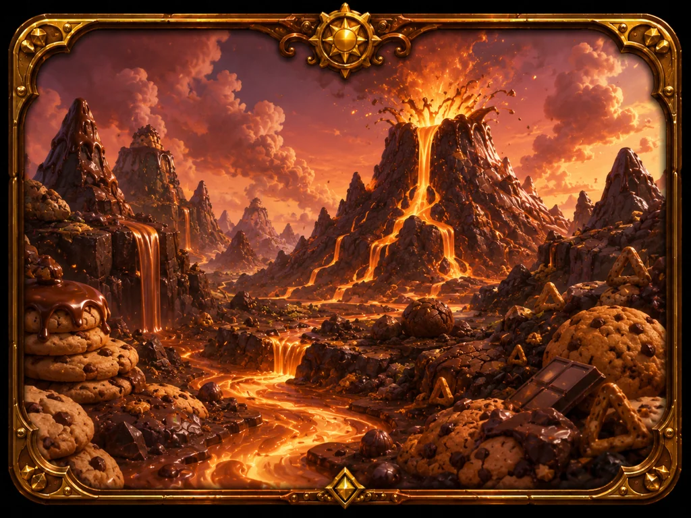
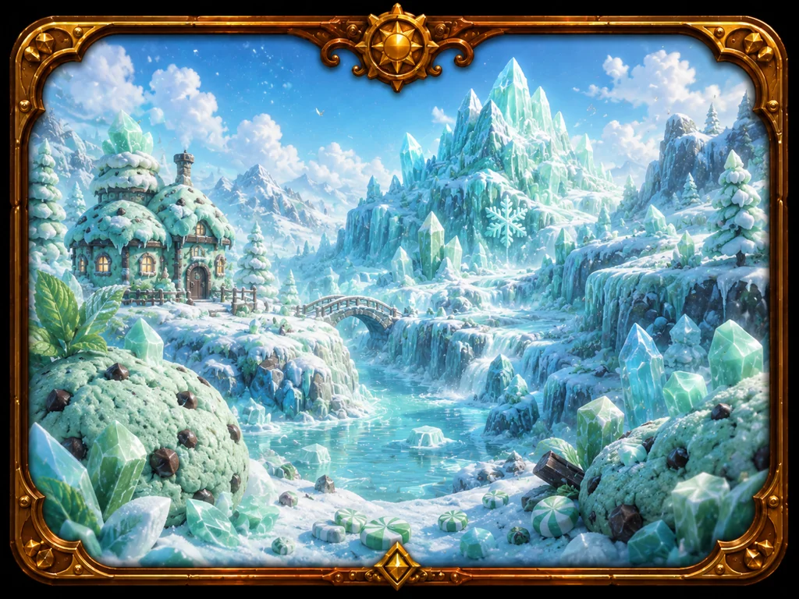
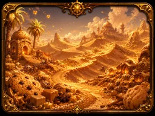
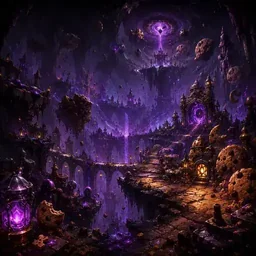

初心者向け攻略・周回の考え方
このゲームは、ただ数字を伸ばすだけでなく「ノルマをどこまで維持するか」「いつ転生するか」という判断が伸びを左右します。ここでは、最初の一歩から周回の考え方までを、実際のゲーム仕様に沿って解説します。
1. 最初にやること
最初の周回は、シンプルに「タップ → 設備 → 研究」の順で回します。
- クッキーをタップして、最初の資金をつくる。
- 「強化」タブでおばあちゃんなど安い設備を買い、毎秒の自動生産を立ち上げる。
- 買える設備をまんべんなく増やしつつ、「研究」で解放されたものを購入して底上げする。
- 金のクッキーが出たら必ずタップ。モンスターが出たら連打で撃破して報酬を選ぶ。
- 所持クッキーが1億に届くと転生が解放される。まずはここを最初の目標に。
2. 設備と研究の進め方
設備は「買うほど値上がりする」ので、1種類に偏らせるより買える範囲でバランスよく増やすのが基本です。特に、複数の設備の種類がそろっていると効果が上がる研究・スキルがあるため、下位設備も切り捨てず持っておくと効きます。
研究は大きく2種類。設備連動の研究はその設備を持っている周回で解放され、生産を大きく伸ばします。実績研究は常に手が届くコストで少しずつ全体を底上げします。研究タブが点滅したら、買えるものは基本的に買っていきましょう。タップ主体で進めたい人は「指先の型」を早めに取ると、タップに毎秒生産が乗って会心も出るようになります。
3. 金のクッキーとモンスターを活かす
金のクッキーは、即時獲得か生産ブーストのどちらかを起こします。ブースト中は生産が大きく伸びるので、ブースト中にまとめ買いや研究購入を進めると効率的です。
モンスター撃破の報酬カードは、周回の方向性を決める重要な要素です。金のクッキー中心なら「金クッキー出現率／倍率／獲得量」系、狩り中心なら「対モンスターダメージ／出現率」系を重ねると噛み合います。金ブースト中にモンスターを倒すと特別な素材（黄金粉）が手に入るなど、2つの要素は連動しています。
4. ノルマを維持するコツ
モンスターはノルマ（必要クッキー量）を満たしている間だけ出現します。ノルマは時間とともに上がり、周回の中盤〜後半（おおよそ8分・10分・14分あたり）で急に重くなる「壁」があります。生産がノルマに追いつけなくなると、その周回はモンスターが出なくなります。
長くノルマを維持するほど、より強いモンスターを狩れて報酬もよくなります。維持のためのポイントは次の通りです。
- 序盤で生産を一気に立ち上げる。最初の数分でどれだけ毎秒を伸ばせるかが、後半の壁に耐えられるかを決めます。
- 金のブーストと購入を重ねる。ブースト中の稼ぎで設備を伸ばし、生産の傾きを上げておきます。
- 研究「重力圧縮」は、ノルマ未達の寸前で必要量を軽減してくれます。壁を越えるための延命策になります。
- ノルマに余裕を持って倒すと発酵素材が落ちるなど、倒し方でドロップが変わる点も意識すると素材集めが進みます。
ノルマを維持した秒数は記録として残り、転生画面でも確認できます。前回の自分より長く維持することを目標にすると、上達がわかりやすくなります。
5. いつ転生（周回）するか
転生でもらえる転生ポイントは、その周回の総クッキー量が多いほど増えます。一方で、転生に必要なコストはあなた自身の「1周回での最高総クッキー数」を基準に決まり、この記録は転生した瞬間に更新されます。
つまり判断の目安はこうです。
・伸びが明らかに鈍り、ノルマも維持できなくなってきたら転生の合図。だらだらと続けるより、そこまでの成果でスキルを取り、次の周回で一気に伸ばすほうが効率的です。
・「今回はいつもより伸びた」という周回では、少し粘って総クッキーを伸ばしてから転生すると、多くの転生ポイントを持ち帰れます（記録更新ぶんのコスト上昇は次回以降なので、記録を更新する周回は相対的にお得です）。
迷ったら「この周回でやれることはやり切ったか？」を基準に。周回をやり直す機能や、直前の転生を取り消す機能もあるので、思い切って試して大丈夫です。
6. スキルツリーの育て方
転生ポイントは中核の「分岐炉心」から使い始めます。ここを取ると周回方針が選べるようになります。序盤におすすめの解放先の考え方は次の通りです。
- 全体を底上げする「全生産」系を軸に取ると、どんな方針でも安定して伸びます。
- 自分の遊び方に合わせて、金クッキー系・怪物狩り系のどちらかを伸ばすと報酬カードと噛み合います。
- 「素材の嗅覚」で工房を、「注文ボード」で注文を解放すると、素材集めと追加報酬の手段が増えます。
- 上位設備の解放スキルを取ると、より生産の高い設備が「強化」タブに並ぶようになります。
スキルツリーはスワイプで見渡し、ピンチで拡大縮小できます。頂点の最終スキル「超越体」を目指して、少しずつ枝を伸ばしていきましょう。
7. ステージ探索と素材集め
ステージは、そのステージで規定数のモンスターを倒す固定クエストを達成すると次が解放されます。ステージが深いほど強いモンスターが出て、落とす素材も変わります。





集めた素材は工房で装備や料理に使います。装備は周回をまたいで残る永続の強化、料理は時限バフです。ステージ選びと倒し方を工夫して、狙った素材を集めていきましょう。